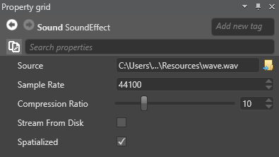

オーディオ アセット プロパティ
アセットビューでオーディオアセットを選択した後に、プロパティグリッドでプロパティを設定することができます。

| プロパティ | 説明 |
|---|---|
| Source | ソースのオーディオファイル（Stride はソースファイルを変更しないことに注意してください） |
| Compression Ratio | 圧縮率を 1（非圧縮）から 40（最大）で指定します。圧縮率を大きくすると、メモリの使用量は最適化されますが、音質は低下します。Stride はオープンソースの Opus/Celt コーデックを使ってオーディオファイルを圧縮します。 |
| Sample Rate | Stride がソースファイルをリサンプリングするサンプルレート（サンプリング周波数）。サンプルレートが高いほど高音質になります。代表的なサンプルレートは 44.1kHz（44,100Hz）、48kHz、88.2kHz、96kHz です。サンプリングレートを高くしても、もともと低品質であるオーディオファイルの品質は向上しないことに注意してください。 |
| Spatialized | 3Dオーディオをシミュレートします。（空間オーディオを参照） |
| Stream From Disk | ストリーミングはメモリを節約できるので、大きな音声ファイルを再生するときに便利です。詳しくは、オーディオのストリーミングを参照してください。 |